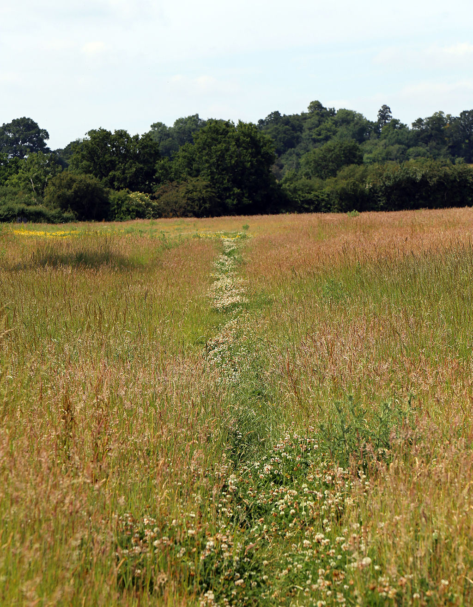

Parks and Nature Areas
Desire paths sometimes cut through sensitive habitats and exclusion zones, threatening wildlife and park security. However, they also provide park management with an indicator of activity concentration. In Yosemite National Park, the National Park Service uses these indicators to help guide its management plan.

Trampling studies have consistently documented that impacts on soil and vegetation occur rapidly with initial use of desire paths. As few as 15 passages over a site can be enough to create a distinct trail, the existence of which then attracts further use. This finding contributed to the creation of the Leave No Trace education program, which instructs travelers in nature areas to either stay on designated trails or, when off trail, distribute their travel lines so as to not inadvertently create new trails in unsustainable locations.
Land managers have devised a variety of techniques to block the creation of desire paths, including fences, dense vegetation, and signage, though none are foolproof. Modern trail design attempts to avoid the need for barriers and restrictions, by aligning trail layout and user desire through physical design and persuasive outreach.
Accommodation
Landscapers sometimes accommodate desire paths by paving them, thereby integrating them into the official path network rather than blocking them. Sometimes, land planners have deliberately left land fully or partially unpathed, waiting to see what desire paths are created, and then paving those. In Finland, planners are known to visit parks immediately after the first snowfall, when the existing paths are not visible. The naturally chosen desire paths, marked by footprints, can then be used to guide the routing of new purpose-built paths.